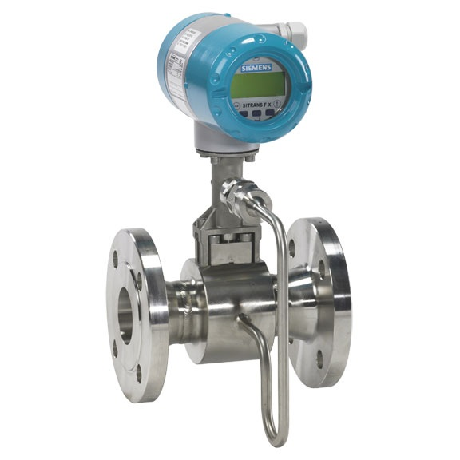

La medición del caudal es esencial en la industria para supervisar y controlar el flujo de líquidos y gases. Hay diferentes unidades de medición, como litros por segundo, metros cúbicos por hora, galones por minuto, entre otras. Los caudalímetros son los instrumentos utilizados para medir el flujo y hay varios tipos, como los de desplazamiento positivo, electromagnéticos, ultrasónicos, entre otros. El caudalímetro de desplazamiento positivo es adecuado para líquidos viscosos, mientras que el caudalímetro electromagnético es más preciso y adecuado para líquidos conductores. Los caudalímetros ultrasónicos son adecuados para líquidos no conductores y gases. Los caudalímetros se utilizan en una variedad de industrias, como la alimentaria, farmacéutica, química y petroquímica, entre otras.

Hay muchas marcas en el mercado de los caudalímetros, y cada una tiene sus ventajas y desventajas. Las principales marcas son Endress+Hauser, Emerson, Siemens y Yokogawa. Endress+Hauser es conocida por su tecnología avanzada y su capacidad para trabajar en condiciones extremas. Emerson es conocida por su facilidad de uso y su capacidad para trabajar en aplicaciones críticas. Siemens es conocida por su precisión y fiabilidad en aplicaciones de alta presión y alta temperatura. Yokogawa es conocida por su precisión y fiabilidad en aplicaciones de baja y alta viscosidad.
En resumen, la elección de un caudalímetro depende de las necesidades específicas de cada aplicación. Es importante tener en cuenta las diferentes medidas de caudal y las marcas disponibles en el mercado para poder tomar la mejor decisión en función de las necesidades del proceso industrial.